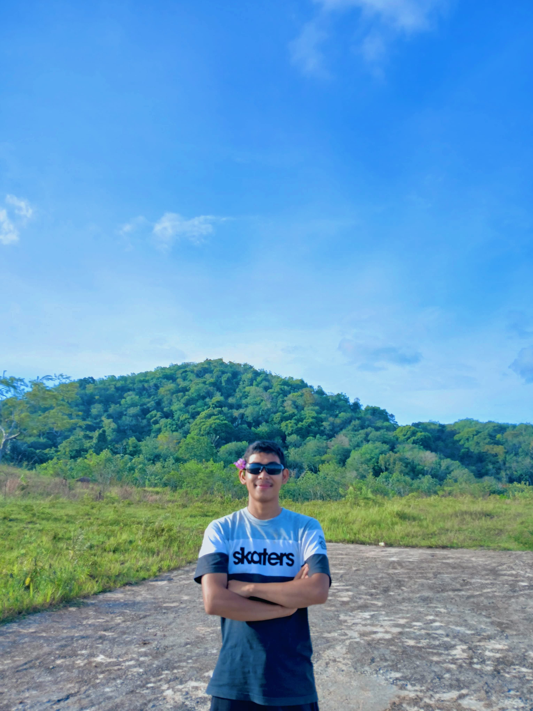

Hallo semua, Perkenalkan nama saya Adytia Sanjaya saya merupakan seorang anak yang lahir ditahun 2004 dan bertempat tinggal di Jl.Dwikora 2 desa Palopat Pijorkoling kota Padangsidimpuan,Sumatra Utara. Tapi saat ini saya sedang berada di perantauan tepatnya di ibu kota yaitu Jakarta. Saya berada disini bukan tanpa maksud karena saya sedang berjuang untuk memperbaiki hidup saya dengan berkuliah di STT Terpadu Nurul Fikri karena Saya memiliki tekat bahwa, jika saya tidak terlahir dari keluarga kaya maka keluarga kaya itu akan terlahir dari saya
tapi mari kita tetap memanjatkan Puji syukur kita terhadap kehadirat Allah SWT yang telah memberikan kita begitu banyak Rahmatnya dan tak lupa Sholawat serta salam nselalu kita panjatkan kepada junjungan kita Muhammad SAW. yang berlafadkan Allahumma shalli alaa Muhammadin 'abdika warosulika nabiyyil ummi wa'alaa aalihii wa sallim.
Saya menyadari bahwa saya sering menghindari tantangan. Ke depan, saya akan berusaha untuk menghadapi ketakutan saya dan melihatnya sebagai kesempatan untuk belajar dan setelah merenungkan pencapaian saya, saya ingin menetapkan tujuan yang lebih spesifik dan terukur agar saya bisa lebih fokus dan termotivasi. Saya menyadari pentingnya manajemen waktu yang baik. Saya akan membuat jadwal harian untuk mengatur waktu belajar dan bersosialisasi agar lebih seimbang dalam memperbaiki pelajaran Saya ingin lebih terbuka terhadap umpan balik dari dosen dan teman sejawat. Dengan mendengarkan masukan mereka, saya bisa memperbaiki diri dan meningkatkan kualitas pekerjaan saya." Setiap kegagalan yang saya alami adalah pelajaran berharga. Saya akan berusaha untuk tidak mengulangi kesalahan yang sama dan belajar dari pengalaman tersebut." Saya menyadari pentingnya membangun jaringan. Ke depan, saya akan aktif berpartisipasi dalam kegiatan kampus dan berkenalan dengan lebih banyak orang." Saya menyadari bahwa kesehatan mental saya sangat berpengaruh pada produktivitas. Saya akan mengambil waktu untuk beristirahat dan melakukan aktivitas yang saya nikmati."
Saya merupakan siswa pada lulusan tahun 2023 sehingga sebelum masuk kuliah di tahun 2024 saya pernah mendaftarkan diri atau mencoba masuk disekolah kedinasan yaitu IPDN.Saya gagal ditahap tes SKD dan seetelah itu saya juga mendaftar tes CPNS tapi belum beruntung kemudian saya juga gagal ditahap SKD. Keduanya saya gagal ditahap perengkingan. Setelah itu saya mencoba masuk didunia pekerjaan dengan masuk di sebuah perusahaan rokok yaitu PT.Berca Kawan Sejati atau rokok Armour saya bekerja selama 3 bulan atau 1 kali tanda tangan kontrak kemudian saya tidak melanjutkan kontrak tersebut. Setelah itu saya lanjut bekerja sebagai kuli bangunan dengan ikut bekerja dengan ayah saya. Selesai.
Pendidikan bagi saya merupakan fondasi utama dalam kehidupan manusia yang memainkan peran sangat penting dalam pembentukan individu, masyarakat, dan bahkan negara. Pendidikan bukan hanya tentang memperoleh pengetahuan dari buku atau di kelas, tetapi juga tentang mengembangkan keterampilan, karakter, dan pemahaman yang lebih luas tentang dunia di sekitar kita.
Hobi olahraga adalah cara yang menyenangkan dan bermanfaat untuk menjaga kesehatan tubuh dan pikiran. Setiap orang bisa memilih olahraga sesuai dengan minat dan kemampuan mereka, mulai dari yang santai hingga yang lebih intens. Berikut merupakan hobi dari sebuah olahraga yang saya minati
Anda bisa berteman dan berbagi ilmu melalui pertemanan dimedia sosial saya seperti facebook dan instagram dan anda juga bisa mengetahui beberapa informasi di perkuliahan Saya. Berikut saya paparkan link media sosial milik saya dan web resmi dari sekolah saya saat ini